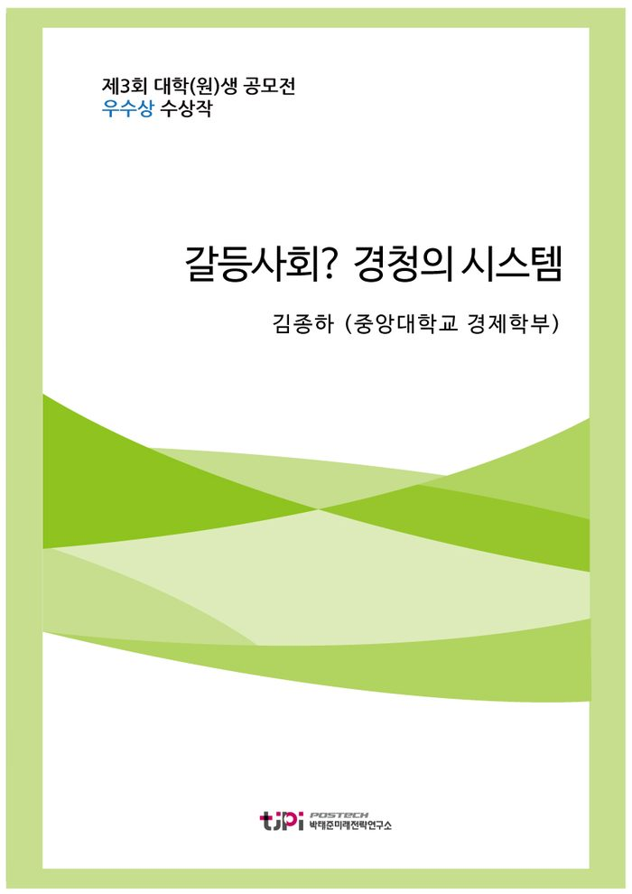

저자 김종하 (중앙대학교 경제학부)연재일 2016.07.20

요 약
한국사회는 본질적으로 갈등이 감춰진 사회다. 마치 애인에게 할 말을 못하는 사람과도 같다. 사람들은 다들 싸울 줄 모른다. 한국사회의 사람들은 모두 참고 견디는 것에 익숙하다. 자신의 문제 혹은 사회의 문제를 갈등의 형식으로 꺼내고, 그것을 풀어나가지 않는다. 그렇기에 한국사회의 갈등은 계속 감춰져 있다가 나중에 극단적인 형태로 터진다.
본 에세이는 한국사회에 일어나고 있는 갈등들을 없애자는 얘기가 아니라, 오히려 어떻게 하면 사람들이 더 많은 갈등을 일으키고, 그것이 어떻게 집단, 사회, 국가로 스며들어 문제를 해결을 이뤄가는지에 대해 말하고 있다.
더 나은 무언가를 위해 갈등을 감수하는 것, 그리고 그 갈등을 받아줄 수 있는 구조를 만드는 것
, 거기에서 행복한 사회는 나타날 것이다.
목 차
들어가며: 갈등의 필요성
1. 갈등 제로의 사회
2. 갈등을 늘리는 일
3. 갈등의 방법론: 갈등의 순환
4. 갈등의 변화가능성: 현실적 모델
5. 행복한 한국사회로의 길
내 용
[2016 청년 에세이 우수상] '갈등사회? 경청의 시스템'
김종하 (중앙대학교 경제학부)
들어가며: 갈등의 필요성
순전히 내 생각이지만 나는 연애를 할 때, 애인에게 모든 것을 맞추는 편이다. 대화를 해도 말하기보단 들으려고 최선을 다한다. 내 얘기가 생각이 나도 말하지 않는다. 계속 상대의 얘기에 덧붙일만한 것을 질문한다. 애인과 부딪힐만한 때에는 양보를 하고 좀 더 참았다. 그게 관계를 더 오래 지속할 수 있는 일이라고 생각했다. 갈등이 생겨도 그것을 굳이 말하지 않았다. 그러다보니 누군가와의 만남은 금세 피곤해졌다. 더 오랫동안 좋게 만날 수 있었는데, 그 이유로 잘못된 적이 많았다.
비슷한 일은 또 있었다. 작년 이맘때 아르바이트를 한 적이 있다. 사무실 보조였는데, 사실상 거의 모든 실무와 행사에 사전준비를 하는 역할이었다. 업무량이 많아 육체적으론 힘들었지만, 일하는 시간은 즐거웠다. 같이 일하는 동료들은 연령대가 비슷해서 그런지 나와 잘 맞았다. 아무리 힘들어도 다들 얼굴을 붉히지 않았다. 아마 나를 힘들게 했던 상사만 아니면 지금도 그곳에서 일하고 있었을 것이다.
그 상사는 완벽주의적인 성향이 강했다. 자신의 마음에 들지 않으면 다른 사람들이 결정한 것을 자기 마음대로 뒤집었다. 나는 그와 있으면 괜히 내가 무엇을 잘못했다는 생각에 시달렸다. 처음 즐거웠던 일하는 시간은 점점 긴장과 불안, 그리고 눈치의 시간이 되었다. 그렇지만 난 그 상사에게 이것을 제대로 말하지 못했다. 말했을 때 그 사람에게 무슨 말을 들을지가 걱정이었다. 결국 난 그 일을 그만두었다.
사람에겐 쌓아둔 것을 말해야 할 때가 있다. 연애관계든 직장에서의 관계든 속안에 갈등을 얘기해야 한다. 그것을 과도하게 참으면 더 큰 문제로 돌아온다. 사소한 다툼으로 끝날 것이 헤어짐이 되었고, 회식 한 번으로 풀릴 일이 계약종료로까지 이어졌다. 우리는 자신의 요구와 마음을 얘기해야 한다. 적당한 수준의 갈등은 타협과 인내보다 훨씬 더 후회 없는 삶을 살기 위해 필요하다.
1. 갈등 제로의 사회
얼핏 보기에 한국사회는 갈등이 폭발하는 사회다. 뉴스는 사람들이 싸우는 장면으로 가득하다. 국회에서는 정치인들이 싸우고, 회사에선 사장과 노동자가 싸우고, 학교에선 학생과 선생들 사이에 싸움이 일어난다. 살고 있는 곳을 두고 재개발업자와 거주민이 싸우기도 한다. 싸움의 방식 또한 극단적이다. 시민들은 갈등을 드러내기 위해 마스크를 쓰고 거리에 모인다. 경찰은 그곳에 벽을 세우고 물을 뿌린다. 방망이와 곤봉이 날아다닌다. 사람들은 무언가에 맞아 쓰러진다. 한국사회의 갈등은 누군가의 생명을 위협할 정도로 폭발한다. TV, 책, 토론들의 주제도 그래서 다 그런 식이다.
[갈등의 한국사회, 통합의 해법은?]
그렇지만 한국사회는 본질적으로 갈등이 감춰진 사회다. 마치 애인에게 할 말을 못하는 사람과도 같다. 사람들은 다들 싸울 줄 모른다. 한국사회의 사람들은 모두 참고 견디는 것에 익숙하다. 자신의 문제 혹은 사회의 문제를 갈등의 형식으로 꺼내고, 그것을 풀어나가지 않는다. 그렇기에 한국사회의 갈등은 계속 감춰져 있다가 나중에 극단적인 형태로 터진다. 평상시에 순한 사람이 화가 나면 더 무서운 것과 똑같다. 살인, 폭행, 엽기범죄 등 한국사회의 사건들이 극단적이고 폭력적인 이유이다.
우리는 일상에서 갈등을 참는데 익숙하다. 사람들은 불만인 것을 말하지 않는다. 회의실
에서 상사가 불만이 있으라고 말할 때, 직원들은 말하지 않는다. 말하면 싸움이 생길 것
을 본능적으로 알고 있다. 갈등을 표출시키는 사람도 갈등을 받아들이는 사람도 준비가 되어 있지 않다. 갈등을 다루는데 있어 미숙하다. 건강하지 못한 사회다. 일종의 사회적 변비현상이라고 부를 수 있다. 사회 전체가 아주 꽉 막혀있다.
이런 사회에서 사는 것은 답답하다. 안그래도 경제적으로 생존하기 힘든데, 속에 있는 말도 못하니 짜증난다. 행복한 사회가 되기 전에 우선 속 시원한 사회가 먼저 되어야 한다. 하지만 사람들은 그러지 못한다. 이유는 단순하다. 무섭기 때문이다. 나는 싸움에 대한 두려움 때문에 예전 애인들에게 불만인 점을 얘기하지 못했다. 직장에선 상사의 폭언을 감당하기 싫어서 갈등적 요소들을 얘기하지 않았다. 결말이 비극적일 것을 알면서도 그랬다. 다른 사람들도 마찬가지일 것이다. 나중에 결과가 더 안 좋을 것을 알아도, 다들 싸움이 무서워 얘기하지 못한다.
그래서 한국사회엔 대화가 없다. 다들 자신 안에 있는 갈등을 말하지 않기에 대화가 겉돈다. 사람들을 많이 만나고 다녀도 남는 게 없다. 다들 답답하다. 아무도 갈등을 일으키지 않기 때문에 사람들은 서로의 말에 귀를 기울일 필요가 없다. 그렇게 한국사회에서 경청은 사라진다. 경청이 사라진 공간에 남은 것은 애정결핍으로 괴로워하는 사람들의 모습이다.
역설적으로 갈등이 전혀 없는 평화는 결핍을 만든다. 그리고 사람들은 애정결핍이 있으면 결코 행복해질 수 없다. 사람은 관계적 동물이다. 대화가 없고, 자신의 마음이 전해지지 않으면 괴로워한다. 사람들은 고통은 버티더라도 외로움엔 미쳐버린다. 대화가 없는 사회에서 사람들은 점점 망가져 간다.
이미 그 증상들은 사회 곳곳에서 나타나고 있다. 사람들은 신경증에 걸렸다. 과도한 일중독이거나 분리불안장애가 있다. 이건 사회보편적인 현상이다. 30%의 비율의 사람들이 정신병 경험이 있는 사회에 문제가 있는 건 확실하다. 이러한 현상은 고독사 사건들에서
가장 극단적으로 나타난다. 사람들은 외로워서 죽는다. 이렇게 결핍은 우리의 행복가능성을 차단한다.
뿐만 아니라, 갈등 무의 사회는 사람들의 일상적인 안전에도 영향을 준다. 세월호 참사와 메르스 사태를 생각해보자. 두 일 모두 사전에 결함이 드러났었다. 그것을 느낀 사람들도 있었다. 하지만 그들은 이런 것을 얘기했을 때 놓일 갈등 상황이 두려워 아무 말도 하지 않았다. 그리고 그 결과는 끔찍했다. 많은 이들이 불행한 운명 앞에 놓였다. 대처도 늦었다. 이 역시 평상시 체계에 대한 문제의식이 생기지 못한 ‘갈등회피적 성향’에서 비롯된다. 우리는 살기 위해서라도 싸워야 한다.
2. 갈등을 늘리는 일
지금 한국사회에 필요한 것은 갈등을 없애는 일이 아니다. TV 토론 프로그램들의 주제는 틀렸다. 한국사회는 갈등의 사회가 아니고, 우리에게 필요한 건 통합의 해법이 아니다. 우리에건 오히려 더 많은 갈등을 양산하는 일이 필요하다.
우리는 더 싸워야 한다. 막말로 조금 더 화를 내고, 더 진상스럽게 굴어야 한다. 직장에선 상사에게 더 대들어야 하고, 집에선 부모님과 더 많이 싸워야 한다. 특히 별거 아닌 일일수록 더 많이 말해야 한다. 사람들이 갈등적인 언사를 일상적으로 하고, 더 많은 문제제기를 할수록 극단적인 사회문제가 줄어들 것이다. 지금처럼 갈등을 억누르고 사람들을 권위로 억압하는 방식으론 한국사회의 새로운 동력을 만들어낼 수 없다.
갈등은 일종의 대화다. 대화 중에서도 매우 집중과 경청의 대화다. 사람들은 자신과 비슷한 말을 하는 사람을 좋아하지만 그 말에 집중하지 않는다. 이미 알고 있는 말이기 때문이다. 그러나 사람들은 자신과 다른 얘기를 하는 사람의 말을 싫어하지만 그 말을 더 열심히 듣는다. 갈등은 사람들에게 자극이며, 사람들은 갈등에서 승리하기 위해 역설적으로 상대를 더욱 잘 이해한다. 물론 갈등은 고통스러운 일이다. 하지만 이는 다른 생각을 가진 두 사람이 서로를 이해하기 위해 벌이는 치열한 노력이다.
이러한 점에서 민주주의는 갈등들의 교환이다. 민주주의의 기본원리는 시민들의 의견을 반영해 사회를 운영하는 것이다. 민주주의 하에서 사람들은 서로 다른 의견을 교환하고 다양한 방식으로 이에 대해 논의해 합의를 해야 한다. 이것 역시 하나의 갈등이다.
따라서 우리는 갈등을 줄이기 위한 방법을 고민해선 안 된다. 이는 곧 민주주의를 포기하자는 얘기이다. 우리는 어떻게 하면 사람들이 더 많은 갈등을 일으키고, 그것이 어떻게 집단, 사회, 국가로 스며들지에 대해 고민해야 한다.
일상적인 갈등은 우리 사회에 새로운 가능성을 부여할 것이다. 한국사회는 단 한번도 이상적으로 갈등에 직면한 적이 없다. 소수의 권위를 지니고 있는 집단이 마음대로 일을 진행하고, 나머지가 그것을 따르는 방식이 기존의 방법이었다. 가부장제, 하향식 직장구조, 관료제 등이 그렇다. 하지만 일상적인 갈등은 다양한 집단들의 영향력을 강화시킨다. 그리고 우리 사회는 그 집단들이 불러일으킬 새로움으로 변할 것이다.
대표적인 예로 여성들의 현재 모습을 들 수 있다. 그동안 한국사회에서 여성들은 차별받아왔다. 그들에겐 권위가 없었다. 가부장제도에서 여성은 갈등을 일으키지 않고 참는 존재였다. 이들은 불합리한 폭력에 노출되어 있는 사회적 약자였다. 하지만 여성들의 집단적인 노력을 통해서 여성인권과 그들의 사회참여는 지속적으로 높아졌다. 이제 그들은 더 이상 참고만 있는 존재가 아니다. 사회에 아직도 남아있는 불합리한 폭력과 차별에 대항해서 그들은 목소리를 내고 있다. 그리고 그 결과 우리 사회엔 여성이 만들어 내는 새로운 가능성이 생겼다. 더 많은 공감능력이 생겼고, 기존 제도에서 상상할 수 없었던 상상력이 발휘되고 있다.
여성만이 아니다. 기존에 사회적 약자로 그저 참고 수동적이어야 했던 이들이 지금 사회에 참여하고 있다. 이들이 가지고 있는 감성과 아이디어로 우리는 한국사회의 새로운 모델을 그릴 수 있다. 복지산업과 같은 경우도 그렇다. ‘변방의 사람‘들은 중심부에서 상상할 수 없었던 세세하지만 실질적인 요소들을 발견하고 사회의 복지를 더욱 실효성 있게 만들고 있다. 모든 새로운 것은 변방에서 나온다.
뿐만 아니라, 갈등은 사회에 새로운 관심을 불러일으킨다. 갈등은 이해를 위한 노력이면서 동시에 존재의 발현이다. 특히 사회적 갈등은 특정한 집단의 존재표명이다. 그
들의 이야기는 우리 사회에 배재되어 있던 무언가를 수면위로 꺼낸다. 그리고 그것은 새로운 발견을 가능하게 한다. 스마트폰, 인터넷, sns 모든 새로움은 그런 방식으로 등장한다. 지금 성장의 한계를 맞이한 한국사회는 이러한 새로움이 있어야만 다시 변화하고 발전할 수 있다.
따라서 한국사회가 ‘속시원’해지고, 더 행복해지기 위해선 일상적 갈등구조가 필요하다. 그동안 소외된 이들에게 우리는 말을 걸어야 한다. 행복해지기 위해 일단 쌓인 것들을 다 토해야 한다. 그렇게 치고박고 싸우다보면 우리사회엔 새로운 방식과 담론이 잔뜩 쌓일 것이다. 사회는 사람들의 얘기를 경청해야 한다.
3. 갈등의 방법론: 갈등의 순환
갈등을 드러내는 건 어렵다. 누군가를 용서하는 것만큼이나 누군가에게 화를 내는 것도 힘들다. 갈등을 해결하는 것만큼이나 갈등이 있다고 밝히는 것도 어렵다. 특히 일상적 공간에선 더욱 그렇다. 사람들은 광장에서 다른 사람과 함께 있으면 제법 갈등상황을 잘 표출한다. 하지만 일상에서 그들은 나약한 한 명이다. 이것을 극복하지 않으면 갈등사회는 불가능하다.
또한 갈등을 개인이 촉발하는 것이 전부가 아니다. 갈등은 사회적 목소리라는 옷을 입어야 한다. 그래야 갈등은 개인의 불만을 뛰어넘어 하나의 사회적 담론이 된다. 야근을 많이 시키는 직장에 대한 불만은 혼자 떠들면 그걸로 끝이지만, 그것이 사회적인 말이 되면 저녁있는 삶이라는 담론이 된다. 하지만 이건 그냥 마주잡이로 되는 게 아니다. 진정한 갈등사회를 위해선 갈등의 방법론이 필요하다.
갈등의 방법론은 단순하다. 더 많은 건강한 갈등을 양산하고, 그것을 사회적 담론으로 만드는 방법이다.
이것은 우리 사회안에 생산적인 대화를 확산시키고, 사람들을 더욱 경청하게 할 것이다. 물론 처음엔 집단간의 충돌이 있을 것이 분명하다. 하지만 그것은 모두 소통과 다양성의 길로 가는 과정이다.
갈등의 방법론은 크게 두 가지의 축을 바탕으로 해서 작동한다. 하나는 참여형 권리교육이며, 다른 하나는 공간 기반의 네트워크이다. 참여형 교육은 사람들에게 건강한 갈등을 불러일으키는 역할을 하며, 네트워크는 그러한 갈등들에 사회성을 부여한다. 이 두 가지 축의 상호작용을 통해 갈등은 일정한 순환을 갖는다.
참여형 교육은 우리가 생각하는 학교 교육이 아니다. 참여형 교육은 어딘가에 합격하기 위한 교육이 아니다. 이것은 우리가 생활에서 필요한 지식과 이 사회에서 우리가 지니고 있는 권리에 대한 교육이다. 참여형 교육은 일할 때의 권리, 사랑할 때의 권리 같은 것들을 주제로 한다. 그러므로 참여형 교육은 교육이자 활동이다.
사람들은 책상 앞에 있는 것이 아니라 몸으로 움직이며 새로운 경험을 받아들인다. 일터에서 데이트 중에 있었던 일과 같은 것들을 그들은 게임과 같은 수단을 통해 대략이나마 해본다. 이는 작은 사회이기에 그 교육엔 사회에서 우리가 마땅히 누려야 할 권리들이 녹아들어가 있다. 그리고 그들이 교육에서 경험한 권리는 그들이 이후에 사회 안에서 불합리하고 불편한 것들에 대한 갈등을 일으킬 원동력이 된다. 권리를 한번이라도 인식하고 경험한 적인 있는 사람에게 불합리함은 참기 어렵다. 적어도 문제제기를 해보기라도 해야 한다. 실제로 노동인권교육과 같은 참여형 교육 이후, 청소년들은 아르바이트를 하면서 자신의 권리에 대해 더욱 잘 인식하고, 그것을 당당히 요구했다. 교육은 불완전하고 대략적인 사회일 뿐이다. 하지만 그러한 교육은 사람들로 하여금 갈등을 말할 용기를 준다. 갈등의 시작은 여기부터이다.
이와 달리 공간 기반 네트워크는 이런 교육의 결과물에 실질적인 힘을 실어준다. 사람들은 모두 어딘가에서 산다. 뜬구름 잡는 얘기처럼 들리지만 사실이다. 누구에게나 주소가 있다.
누군지 간에 공간의 영향에서 벗어날 수 있는 사람은 없다. 따라서 같은 공간에 살고 있는 사람들이 무슨 말은 하는지는 우리의 삶에도 중요하다. 그들이 불편하게 느끼는 것이 우리가 불편하게 느끼는 것이기 때문이다.
따라서 공간 기반 네트워크는 유흥모임과는 다르다. 그곳에선 유흥모임보다 훨씬 더 일상의 갈등에 대한 공감이 많이 이루어진다. 그 순간 이 네트워크의 얘기는 불만을 넘어선다. 그것은 하나의 여론이다. 정치인들, 행정가들은 이것을 고려하면서 움직여야 한다. 물론 이 공간은 꼭 물리적 공간일 필요는 없다. sns와 같은 것에서도 의미 있는 네트워크는 많다. 중요한 것은 비슷한 공감대를 공유하는 사람들이 모일 수 있는 공간이냐는 점이다.
이러한 네트워크에서 사람들은 자신의 의견이 인정받는 걸 느낀다. 공감을 받기에 당연하다. 그 공감은 이후에 또 다른 사람들이 인정받는데 기초가 된다. 그렇게 네트워크는 의견을 점점 더 풍부하게 흡수하며 발전한다. 그리고 그것이 일정 수준이 되었을 때, 그 네트워크에서 얘기하는 갈등적 요소는 사회를 변화시킬 하나의 담론이다. 여성들의 권리 신장이 그랬고, 흑인의 인종평등이 그랬다. 사회는 갈등으로 발전해왔다.
그 갈등들은 거의 모두 개인들의 변화와 사회의 변화를 발판으로 삼았다. 새로운 활동과 경험을 통해 개인들은 참던 것을 그만두고 갈등을 말한다. 그리고 그 갈등들이 모이면서 사회엔 새로운 담론이 생긴다. 그 담론들은 변방의 것이다. 괜한 분란을 일으킨다는 이유로 무시당하고 배척당한다. 하지만 변방에선 계속 새로운 것이 생겨난다. 그 새로움은 기존의 고정적인 질서의 오류를 교정하고 사회를 더 나은 방향으로 만든다.
[갈등의 방법론 모델]
4. 갈등의 변화가능성: 현실적 모델
이러한 갈등모델은 한국사회에도 있다. 많은 사람들의 현실은 갈등과 관계가 없지만, 몇몇 이들은 한국사회에 건강한 갈등을 확산하고 있다. 그리고 이들의 노력은 조금씩이지만, 사회를 바꾸고 있다. 더 많은 사람들이 스스로의 권리를 보장받고 민주주의가 더 자리잡을 수 있는 방식으로 한국사회는 나아가고 있다. 결국 행복한 사회란 여기에서부터 시작하는 것이다.
가장 대표적인 예로 최근 있었던 서울시와 성남시의 청년보장이 대표적이다. 그것은 지방행정부의 일방적인 정책이 아니다. 그 지역에 살고 있던 청년들의 네트워크가 청년들의 고민과 공감을 이끌어내서 직접 만든 성과다. 그동안 청년들은 사회적으로 소외되어 있었다. 다들 실업율이란 숫자에만 집중했을 뿐, 아무도 청년들의 구체적인 고민을 듣지 않았다. 심지어 청년들도 취업이란 목표에 갇혀 자신의 삶을 통합적으로 살펴보지 않았다. 청년들의 삶은 피폐해졌다. 취업을 한 청년도, 하지 못한 청년도 비슷했다.
청년보장의 사례는 이러한 상황에서 청년들이 최초로 말한 구체적인 자신의 삶이다. 지역 네트워크로 모인 청년들은 취업을 말하지 않았다. 그렇게 짧은 두 글자는 그들의 삶을 설명할 수 없었다.
그들은 자신의 삶에서 청년으로 느낀 구체적인 현장의 얘기를 했다. 이야기는 구체적이었고, 다양했으며, 무엇보다도 살아있었다. 그런 이들의 얘기가 모여 서울시에는 청년의회가 열렸고 청년들의 구체적인 이야기는 행정에 반영되었다. 그 과정에서 갈등은 분명히 존재했다. 청년들의 다양한 얘기는 서로 충돌했고, 청년과 다른 세대 간의 소통 역시 어려웠다. 하지만 그 갈등은 결국 청년보장이라고 하는 사회적인 변화로 결실을 맺었다. 청년정책네트워크라는 이름의 청년들 사이에서 나는 공간 기반의 네트워크가 일으킨 갈등이 사회를 바꾸는 것을 확인했다.
또 다른 경우도 있다. 나는 작년에 고용노동부에서 진행하는 알바신고센터 사업에 참여했다. 아르바이트를 하는 청소년들의 권리를 보호하는 프로그램을 진행하는 사업이다. 이 사업에서 우리는 노동인권에 대한 참여형 교육을 진행했다. 인권과 관련된 게임을 했고, 직접 일터에 찾아가 사람들이 일하는 것을 보기도 했다. 아니면 자신의 권리를 찾은 아르바이트들을 만나 그들의 얘기를 들어보았다. 그것은 효과가 있었다, 청소년들은 자신의 권리를 명확히 인식했을 뿐만 아니라, 그것을 찾아야 한다는 마음까지 먹었다. 그 교육 이후 실제로 청소년들 몇 명이 자신의 아르바이트 자리에 가서 부당한 대우를 바꾸고 온 것은 이 교육의 실효성을 증명한다.
여기서 멈추지 않았다. 그 청소년들은 어느새 친해져 자신들의 이야기를 공유했다. 주로 아르바이트 얘기였다. 비슷한 아르바이트를 하는 청소년들이기에 그들은 쉽게 공감했다. 그들은 순식간에 친해졌다. 그리고 그들의 이야기는 점점 풍부해져 마지막엔 청소년 아르바이트들이라면 공감하고 해결됐으면 하는 세심한 문제제기가 되었다. 그들은 자신들의 이야기를 다른 청소년들에게도 물었고, 그것들을 모았다. 그 결과, SNS와 같은 방식을 통해서 사람들은 청소년 아르바이트 문제에 공감할 만한 콘텐츠를 볼 수 있었다. 매우 작은 방식이지만 갈등이 개인적인 수준에서 촉발되고 그것이 공감을 통해 확산되었다. 사람들은 갈등을 통해 더 나은 생활로 나아갔고, 더 편해졌다.
5. 행복한 한국사회로의 길
한국사회가 행복해지는 것은 어렵다. 사람들은 불안하고, 위험하고, 괴롭다. 10대 청소년부터 노인들까지 모두가 각자의 문제를 가지고 살아가고 있다. 요동치는 일자리시장, 실효성이
떨어지는 공교육, 위험한 안전체계 등, 한국사회에선 행복을 찾기보단 생존을 찾는 게 우선이다. 사람들은 행복해지기 위해 노력하지 않는다. 그들은 살아남기 위해 노력한다. 발도 뻗을 수 없는 고시원에서 청년들이 누워있는 이유는 그들이 행복해지고 싶어서가 아니라 살아남길 원하기 때문이다.
하지만 우리는 그렇다고 사회를 혐오해선 안 된다. 혐오는 포기의 또 다른 표현이다. 그것은 행복해지는 가능성을 완전히 포기하는 길이다. 혐오하는 자들은 싸우지 않는다. 그들을 그저 뒤에서 자신의 상황을 욕한다. 그것도 필요하다. 아무것도 인지하지 못하는 사람들보다 욕이라도 하는 것이 속 시원하다.
하지만 이걸로 끝나면 아무것도 변하지 않는다. 한번이라도 싸워야 나를 힘들게 하는 게 없어진다. 그것이야말로 민주주의이며, 그것이야말로 자신의 삶을 바꾸는 길이다. 우리가 행복해질 수 있는 가능성은 여기서부터 출발한다. 더 나은 무언가를 위해 갈등을 감수하는 것, 그리고 그 갈등을 받아줄 수 있는 구조를 만드는 것, 거기에서 행복한 사회는 나타난다. 물론 그 구조는 아무도 바로 행복하게 해주지 않는다. 사실 갈등의 사회는 피곤하다. 계속 싸우는 일은 우리 생각보다 피곤하다. 하지만 이 구조는 사람들이 자신만의 삶을 고집할 자유, 그리고 그것을 타인과 나눌 수 있는 연대를 제공한다. 사람들은 더 행복해지기 위한 선택을 할 수 있다. 행복한 한국사회는 사람들 각자가 자신이 행복할 수 있게 맘놓고 하고 싶은 말을 할 수 있는 사회일 것이다.